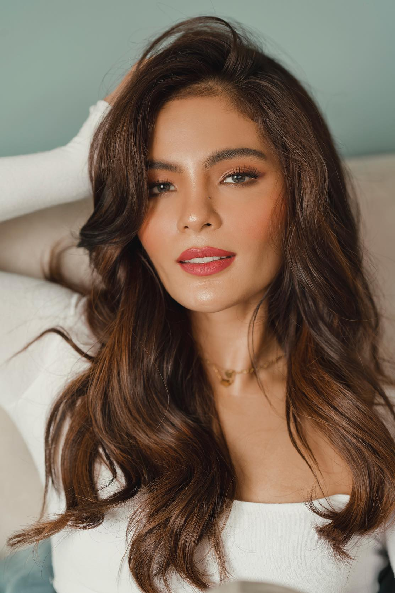
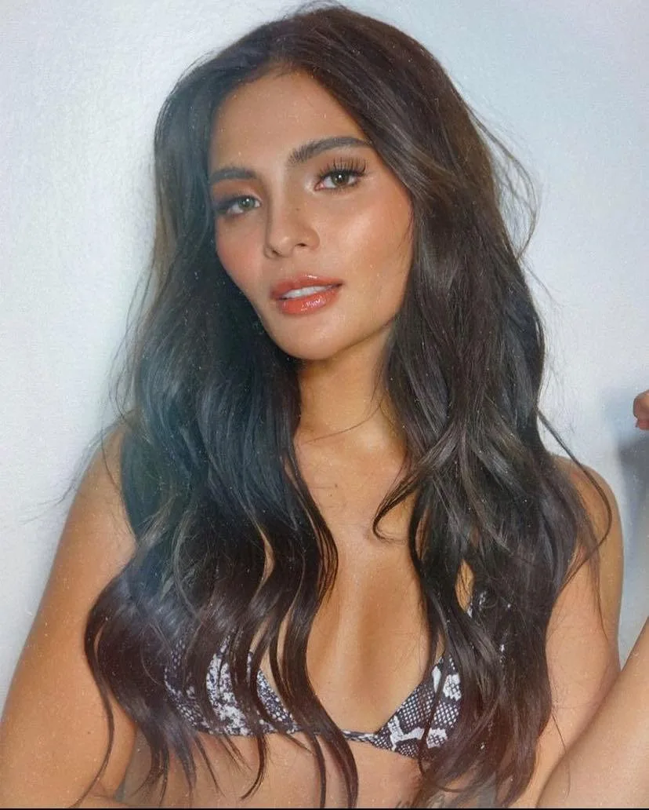

Filipino Actress | Lovi Poe
Early and personal life
Lourdes Virginia Moran Poe was born in St. Luke's Medical Center in Quezon City.[1] She was conceived from an affair between Filipino actors Fernando Poe Jr., who was married to Susan Roces, and Rowena Moran, who was his co-star in Kapag Puno Na ang Salop (1987). Poe was raised by Moran as a single mother. Growing up, she had spent limited time with her father in secret as she was raised abroad. She was publicly acknowledged by her father in 2004 during his presidential campaign.[1][9] Through her father, she has two older siblings, senator Grace and DJ Ronian, and through her mother, she has a younger sister, singer Mariel.[10][11] Although Roces knew about Lovi, Grace found out about Lovi during her father's campaign and the sisters met during their father's wake.[9]
Poe finished high school at the Colegio San Agustin in Makati where she graduated in 2007. She then later took courses at the International Academy of Management and Economics and Miriam College.[12][13]
Poe endorsed her sister Grace in the 2016 Philippine general election and the 2019 Philippine Senate election.[14][15]
On August 26, 2023, Poe married British movie producer Monty Blencowe at Cliveden House near Berkshire, England. They announced their engagement publicly on August 8, 2023.[16]
Read More
Career
At age 13, he joined the cast of ABS-CBN's Cyberkada. This was followed by Regal Films' horror flick, Sa Piling ng mga Aswang (1999), in which he starred opposite Maricel Soriano. His next project was Jose Javier Reyes' Yakapin Mo ang Umaga (2000), where he played son to Christopher de Leon and Lorna Tolentino. But what was his most memorable is his lead portrayal of the juvenile prisoner in the award-winning filmfest entry, Deathrow in 2000, in which he co-starred with Eddie Garcia and was coached by director Joel Lamangan. He also starred in different television shows such as Ikaw Lang ang Mamahalin with Angelika dela Cruz, Kung Mawawala Ka with Sunshine Dizon and Bakekang with Lovi Poe.
His career began in ABS-CBN at 1993 at the age of 8, as first seen in Star Drama Presents. In 1999, he moved to GMA Network until 2006.
Read More

PATH OF SUCCESS
Personal life
Domingo is the son of a lawyer. The actor was linked to different actresses like Anne Curtis, Angel Locsin, Sunshine Dizon, and Lovi Poe. In September 2009, it was reported in the news that he had an affair with Rachel Tiongson while she was still cohabiting with politician and businessman Chavit Singson.[1] On March 11, 2016, Domingo married his long-time girlfriend, Ria Sacasas, in an intimate ceremony.[2] Domingo has one daughter with a former girlfriend.[3]
On October 27, 2017, Domingo and two other persons were arrested by PDEA for possession of illegal drugs.[4][5] Three days later, Domingo was allowed by PDEA to post bail; he remain imprisoned until November 2017.
Read More